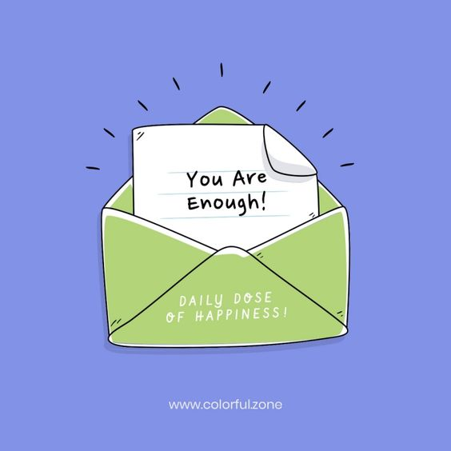
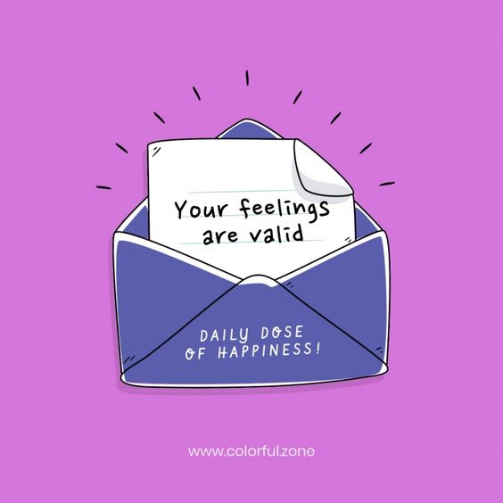

|  |  |
This calming website is a bit different than the rest of the ones on this list. 7 Cups of Tea allows you to speak with a trained listener who will support you while you are expressing your thoughts to them.
Pixel Thoughts in a 60 – second meditation website. You can enter the thoughts that you are worried about and it will guide you through a meditation.
Pro Tip: Make sure you have your sound on for this one. The background music is very relaxing.
A soft murmur lets you select a variety of calming sounds to relax to, from rain, ocean waves, coffe shop, fire and even crickets.
Even if you’re not a dog person, you simply can’t resist these adorable munchkins. Just stare and giggle at random gifs of dogs (and sometimes cats) and feel your worries slowly start to fade away.
A guided meditation site which provides a beautiful nature scene and a chance to meditate for up to 20 minutes. Great for a lunch break escape. It really works, especially if you’re a meditation newbie.
HEADSPACE is a great app when it comes to self-care. You can listen to a general guided meditation under their Basic meditations or choose one that’s more specific, such as Sleep or Relationships. And the voice behind Headspace is so soothing, you’ll feel more at ease in no time. There are also super short meditations if you just need a quick dose of calm.
If you’re looking for daily motivational texts and a big selection of self-improvement audio (on topics including productivity, mindfulness, and improving sleep), Shine is the self-care app for you. It can help you de-stress, lower anxiety, and feel better overall. You can save your favorite texts, too, so that you can look at them as many times as you need to. The app has a gratitude element, as well, where you can track your gratitude each day.
Breathing Zone If you need help focusing on your breathing — which can help decrease your anxiety — Breathing Zone may be the app you’re looking for. It’s a guided breathing exercise that’ll help you go from anxious to relaxed in just a few breaths. And, you can cater the number of breaths you want to take per minute — such as eight or 10. Not only will the app help elevate your mood, but it’ll retrain your brain, too.
Happify Happify can help you out by reducing stress and helping you manage negative thoughts. Whether you’re dealing with challenging co-workers or just having a bad day, the app has science-based games and activities to help your emotional well-being and have you see the positives. You can choose from all kinds of categories, such as building your self-confidence or achieving mindfulness through meditation.